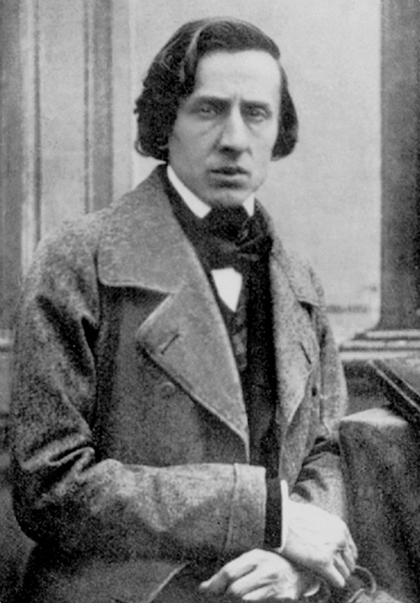

FRIDERIKS ŠOPĒNS1 (1810 — 1849)
Poļu komponista Šopēna dziļi nacionālā daiļrade ir savā ziņā unikāla parādība mūzikas vēsturē. Tā ir nozīmīga arī tādēļ, ka galvenokārt izpausta klaviermūzikas žanrā, taču tas komponistam nav traucējis atklāt muzikālo tēlu un mūzikas valodas daudzveidību. Pie tam šie skaņdarbi, kas veido romantiskās mūzikas zelta fondu, ir sacerēti salīdzinoši īsā laika posmā (komponists [tuberkulozes dēļ] nodzīvoja vien 39 gadus).
Pievēršanās klaviermūzikai Šopēna daiļradē nav nejauša — viņš pats bija viens no 19. gs.izcilākajiem pianistiem. Ir interesanti salīdzināt Šopēna pianismu ar viņa laikabiedru (piem., Lista, Tālberga u.c.) mākslu - Šopēna stils izcēlās ar plastiku, smalkumu, maigumu un poēziju. Par viņu rakstīja, ka viņa klavieres "dzied, sapņo un raud", ka viņa pirksti ir kā "eņģeļa spārni" un ka viņa spēle ir "skaņu dzeja". Līdz mūsdienām pat nonācis kāds tā laika joks par to, kas bijis labāks pianists — Lists vai Tālbergs, ar to domājot, ka...Šopēns.
Šopēna dzīvē bijis Varšavas periods (līdz 1830.g.) un Parīzes periods (līdz nāvei).2 Dzimtenē pavadītais laiks atstāja milzīgu iespaidu uz komponista daiļradi — viņa mūzikā patiesi, emocionāli un ar lepnumu ir atspoguļota Polijas kultūra, sadzīve, daba un cilvēku dvēseliskums. Dzimtenes mīlestība un patrīotisms ar jaunu spēku uzliesmojuši tajos darbos, kas tapuši Francijā, komponistam smagi pārdzīvojot tautiešu neveiksmīgo un asiņaino sacelšanos pret valdību.3 Protams, ka, būdams romantiķis, Šopēns visas šīs tēmas atklājis caur jūtu un pārdzīvojumu prizmu. Zīmīgi, ka Šopēns bija neprogrammatiskās mūzikas piekritējs (pretēji, piem., Listam).
Žanru novatorismi:
· mūzikas apritē atgriezis prelūdijas žanru; [baroka mūzikā tā bija kā cikla vai svītas daļa]
· radījis instrumentālo balādi; [šī žanra sakarā jāatceras Šūberts, Šopēns, Vītols un Alfrēds Kalniņš]
· augstvērtīgā līmenī pacēlis noktirnes un skerco žanrus; [pirmās noktirnes rakstījis īru komponists Džons Fīlds]
· piešķīris poētiski dramatiskas nianses dejām — valsim, mazurkai, polonēzei;
· radījis koncertetīdes un romantiskās fantāzijas žanra spilgtus paraugus;
KLAVIERMŪZIKA (gan lielformas darbi, gan miniatūras)
· 3 sonātes
· 4 balādes (tās mēģina saistīt ar Adama Mickeviča (1798 — 1855) literārajām balādēm, taču visticamāk, ka Šopēns skaņdarbus nav veidojis programmatiskus)
· 4 skerco (sacerēti Bēthoveniskā izpratnē — ar dramatiskiem vaibstiem)
· Fantāzija fa op.49 un Fantāzija - impromts do# op.66
· 22 noktirnes (tulkojumā nakts dziesmas). Šopēna noktirnes ir daudzveidīgas — tajās atrodama gan romantiskā nakts maģija, gan šūpļadziesmas ietvarā paustā sapņu pasaule, gan vientulība un skumjas, gan vēršanās pie Radītāja, gan visai dzīvīgi brīži. Pazīstamākās: op.9/2 Mib, op.27/1 do#, op.27/2 Reb, op.55/1 fa
· 27 koncerttipa etīdes (pa 12 op.10 un op.25 plus trīs atsevišķas etīdes): Revolucionārā etīde op.10/12 do, "lēnās" op.10/3 Mi Atvadu un op.25/7 do%
·
28
prelūdijas (24
prelūdiju cikls visās tonalitātēs + 4 prelūdijas atsevišķi) Ciklā prelūdijas izkārtotas
pa kvintu apli (Do-la, Sol-mi utt). [Kā Baham – vienvārda un hromatiska
veidā]
Šopēna prelūdijas ir
ļoti lakoniskas [ īsākā (do) ir 13 taktis gara] un
žanriski ļoti daudzveidīgas:
o kā noktirne — No.15 un No.4;
o kā imprompts — No.22
o kā skerco — No.5 un No.10
o kā etīde — No.3 un No.8
o kā elēģija— No.2;
o kā sēru maršs — No.20;
o kā idilliska mazurka — No.7;
o kā himna ar maršu— No.9
o kā dramatiskas balāde — No. 16 un No.18
· 20 valši (divu veidu):
o melanholiskie (parasti minorā) — la op.34/2, do# op.64/2
o t.s. "spožie" (parasti mažorā) — Mib op.18/1, Lab op.42/2, Mintūtes valsis Reb op. 64/1
· 59 mazurkas (ar daudzveidīgām rakstura niansēm):
o zemnieciski smagnējas, tautiskas — op.56/2 Do, op.7/1 Sib
o tādas, kas atspoguļo jūtu pasauli — op.56/3 do
· 16 polonēzes (arī daudzveidīgas):
o melanholiskas un dramatiskas — op. 26/1 do, op.26/2 mib
o svinīgi spožas un heroiskas — op. 40/1 La (Militārā), op.53/6 Lab (Heroiskā)
o ļoti apjomīgā, ar mazurkas un noktirnes atskaņām — Polonēze-fantāzija op.61 Lab (pēdējā)
SIMFONISKĀ MŪZIKA (klavierēm ar orķestri)
· 2 klavierkoncerti
· Variācijas par Mocarta op. Dons Žuans tēmām
· Rondo a la krakowiak [krakovjaks līdzās mazurkai un polonēzei ir poļu deja, bet 2/4 taktsmērā]
· Fantāzija
Nedaudz KAMERMŪZIKAS (čellam ar klavierēm, klavieru trio, solodziesmas)
MŪZIKAS VALODA
Melodijas ļotī spilgtas un daudzveidīgas:
· plastiskas un dziedošas, nereti ar plašu elpu, izmantota arī liriskā seksta (noktirne Mib)
· ļoti raksturīgs ir smalku rotājumu iekļāvums melodijās;
· rečitējošas (sēru maršs no 2.sonātes, prelūdija mi);
· instrumentālā tipa (mazurkās, etīdēs);
· 2.sonātes fināls neparasts ar to, ka tajā nav Šopēnam tipisko spilgto melodiju — vien mutuļojoša figurācija (to prasa attiecīgais tēls);
Faktūra
· bieži vairākslāņu: ir melodija, bass, vidusbalsis vai figurācija (melodijas un figurācijas saplūšana prelūdijā fa);
· daudzviet improvizatoriska izklāsta iespaids;
· sastopama arī akordu faktūra (prelūdija do);
Metroritms
· ļoti raksturīga rubato spēles maniere, sastopams arī brīvdalījums;
· izteikts žanriskums (t.sk., deju ritmi arī "nedejiskos" skaņdarbos, piem., prelūdijā La, 1.balādes BP);
Harmonijās
· dominē subdominantes sfēra (raksturīgs slāvu komponistiem vispār) (piem., noktirnē Mib pirmā novirze ir uz II pakāpes tonalitāti;
· atbilstoši romantiskās mūzikas tradīcijai harmonijas ir krāsainas, bet Šopēns tās bagātina arī ar smalkiem hromatismiem;
· 1.balāde piesaista uzmanību ar ievadu pa neapoliešu akorda skaņām;
· mazurkās mēdz būt senās skaņkārtas;
Tembrs
Šopēns ļoti lielu uzmanību pievērsa specifiskajiem klavieru tembriem un kolorītiem (līdzīgi kā to darīja viņa laikabiedrs Berliozs simfoniskajā mūzikā). Viņa mūzikas nianses slēpjas pat tajā, kādā secībā tiek izkārtotas akorda skaņas vai, piem., kādi efekti tiek panākti ar pedalizāciju. Tas savā ziņā izskaidro to, kāpēc Šopēna izteikti pianistiskie darbi cieš vai ciestu neveiksmes pārlikumos.
1 Frideriks (un nevis Frederiks) ir Šopēna kristāmvārds, ko lietoja pats komponists un viņa tuvinieki. Savukārt uzvārds pareizi rakstāms un izrunājams ar garo „ē”, jo tas ir franciskas izcelsmes (Šopēna tēvs bija francūzis Nicold Chopin).
2 Parīzē Šopēns nonāca mākslinieku elites sabiedrībā, piem., viņš uzturēja draudzīgas attiecības ar gleznotāju Ežēnu Delakruā, kurš gleznojis slaveno Šopēna portretu, bet ar rakstnieci Žoržu Sandu viņš izveidoja tuvas un ģimoeniskas
attiecības. Tāpat Parīzē Šopēns satika Berliozu, Listu, Sūmani u.c,
31830.gadā sākās t.s. Novembra sacelšanās pret Krievijas impēriju, kuras sastāvā bija daļa Polijas kopš 18.gs.beigās notikušajām Polijas dalīšanām starp Prūsiju, Krieviju un Austriju.